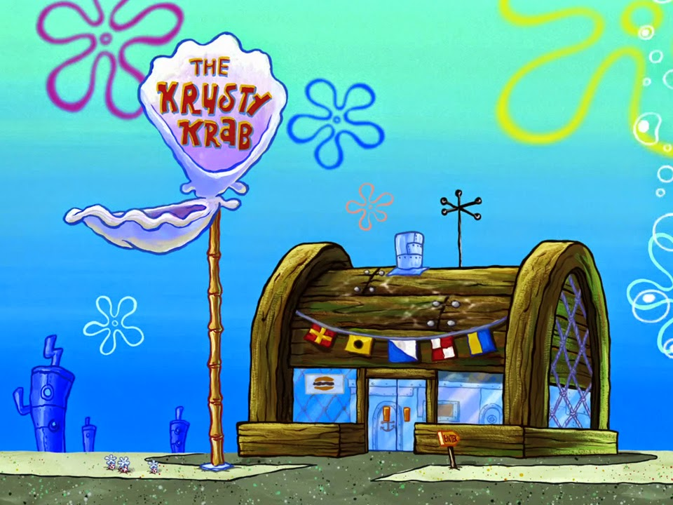

Siri Cascudo
Quebra de Linha
SIRI CASCUDO É um restaurante de fast food fictício presente no seriado animado SpongeBob SquarePants, famoso por comercializar seu hambúrguer de assinatura, o HAMBURGUER DE SIRI, cuja fórmula é um segredo comercial bem guardado...Onde Bob Esponja Calça Quadrada e Lula Molusco Tentaculos trabalham, Bob trabalha como mestre cuca, e Lula na caixa registradora.

O FAMOSO HAMBÚRGUER DE SIRI
RECEITA
- 450 g de carne de siri ou caranguejo, pré-cozida, se possível sem casca
- 1/4 de pimentão vermelho ou verde, picado
- 2 colheres (sopa) de cebola, picada
- 1/2 xícara (chá) de farinha de rosca
- 1/4 xícara de manteiga ou margarina derretida
- Catchup
- 5 fatias de pão de forma esfarelado
- 4 colheres (sopa) de xerez ou vinho branco
- 1 ovo batido
- 2 colheres (chá) de páprica
- Fatias de limão e coentro ou salsa para guarnecer